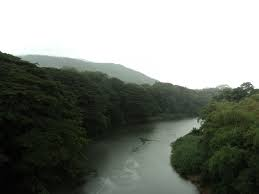
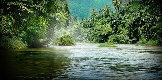
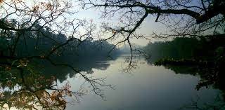
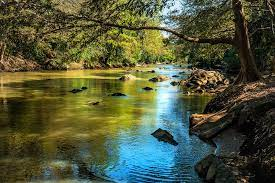

|

|
Mahaweli River
- It is the longest river in Sri Lanka.
- It is 335km.
- It starts in the Sri Pada mountain and it ends in Trincomalee.
- The huge project Mahaweli was made around this river.
- Maha Valuka is another name for this river.
|
|

|
Kelani River
- It stars in the Sri Pada mountain and it ends in Colombo.
- It is the fourth longest river in Srilanka and its length is 145km.
- Kalyani nadee is another name for this river.
|
|

|
Kalu River
- It starts in the Samanala Mountain range and it ends in Kaluthara.
- Kalanadi is another name for this river.
|
|

| walawe River
- It starts in the Samanala mountain range and it ends in Ambalanthota.
- Vanavahini is another name for this river.
|

|
Malwathu Oya River
- It is the second lowest river in Srilaka.
- Its length is 162km.It calls as Aruvi Aru as well.
|